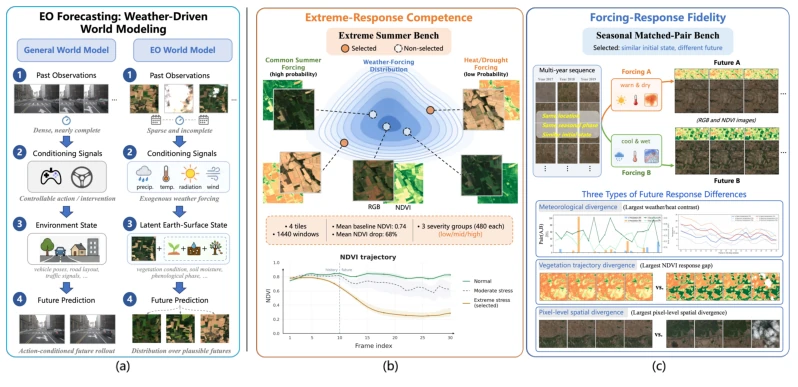
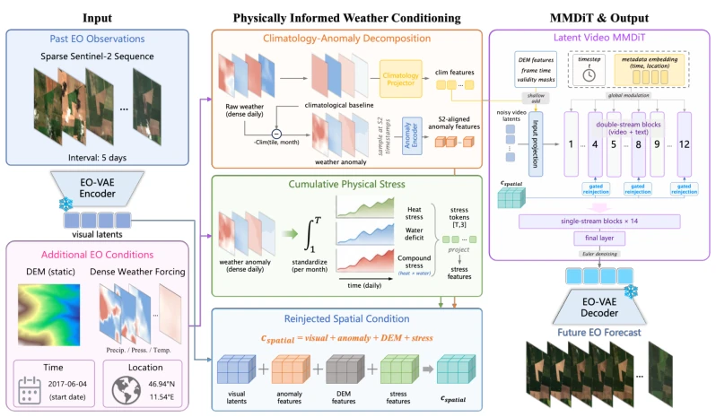
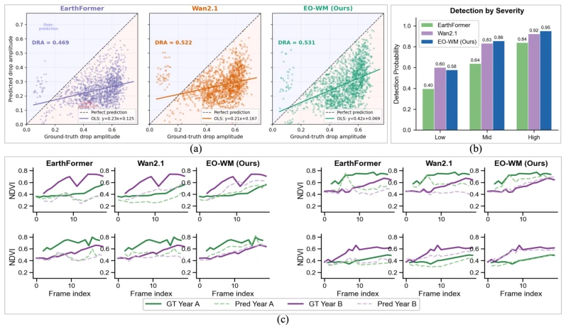

This paper adds a "physical constraint" patch to the buzzword "world model". In the embodied intelligence community, world models typically refer to interactive simulators, yet here it is applied to satellite remote sensing, essentially functioning as a video generator conditioned on weather. The highlight lies in decomposing weather into climate baselines, anomalies, and cumulative stress, which is far more physics-informed than simply concatenating a few channels. However, the authors' self-labeling as "world model" raises some suspicion of trend-chasing, given that weather is not an agent's action and cannot be actively intervened upon. The two newly proposed benchmarks are highly necessary, as relying solely on pixel reconstruction accuracy may lead to models that are merely "drawing accurately" rather than "thinking correctly". Limitations include the ability to predict only seasonal windows, where long-term simulation still depends on favorable weather conditions, and unobserved states such as soil moisture remain a black box.
Earth Observation (EO) prediction is critical for disaster monitoring and agriculture [32]. Existing methods exhibit significant flaws: deterministic models such as Earthformer [8] and SimVP [7] can only yield single predictions, failing to express uncertainty under partial observability; whereas diffusion models like Vegediff [57], although capable of generating probability distributions, treat meteorological variables as indistinguishable conditional signals, overlooking the physical distinctions between climate backgrounds and anomaly events. More critically, existing benchmarks primarily focus on pixel reconstruction accuracy, lacking evaluation of "weather-driven responses," i.e., whether the model can generate physically consistent surface responses when weather conditions change. This results in models potentially learning to "memorize" rather than "understand" surface dynamics, rendering them incapable of handling extreme events or climate forcing variations.

Figure 1: Overview of EO world model and the proposed evaluation benchmarks. (a): EO forecasting differs from standard action-conditioned world modeling: satellite observations are sparse and incomplete, and exogenous weather forcing drives future surface change in ways that depend on unobserved latent Earth-surface states. (b) and (c): We define two EO-specific evaluation dimensions beyond standard reconstruction: predicting vegetation degradation under drought and heat stress, and preserving the correct surface response when meteorological forcing changes.
EO-WM employs a latent diffusion architecture, centered on a physics-aware conditional framework. First, multi-spectral satellite images are encoded into latent representations through an EO-VAE. The generator, based on MMDiT and Flow Matching, predicts the velocity field. The innovation lies in the structured injection of weather conditions: 1. Climate-Anomaly Decomposition: Meteorological data is decomposed into monthly climate baselines (seasonal reference) and residual anomalies (actual deviation), injected via separate paths to avoid misinterpreting normal seasonal variations as forcing. 2. Cumulative Physical Stress: The cumulative history of thermal stress and water deficit is calculated to capture the impact of prolonged drought or high temperatures, rather than merely observing instantaneous anomalies. 3. Multi-source Condition Routing: Visual, DEM, time embeddings, and the aforementioned physical features are combined and periodically re-injected into Transformer layers via zero-initialized gating, ensuring deep features retain physical signals. Furthermore, a strategy of randomly dropping anomaly tensors during training is employed to support classifier-free guidance during inference, enhancing sensitivity to extreme weather.

Figure 2: Overview of EO-WM. Sparse EO observations are encoded into visual latents, while dense daily weather forcing is decomposed using Clim(tile, month), a precomputed monthly climatology for each geographic tile. The climatological features are injected through a shallow conditioning path, whereas anomaly, DEM, visual, and cumulative-stress features are combined into a spatial condition.
Based on the EarthNet2021 dataset [32], deterministic models (e.g., Earthformer [8]) and generative models (e.g., Wan2.1 [47], Latte [26]) were compared. In addition to standard reconstruction metrics (ENS, MAE), two new benchmarks were prioritized: the Extreme Summer Benchmark (assessing the severity of vegetation degradation) and the Seasonal Match Pair Benchmark (assessing response direction under weather changes). Results indicate that EO-WM significantly outperforms baselines on diagnostic metrics, such as a 5.63% reduction in error for NDVI decline magnitude under extreme events and a 7.80% improvement in direction hit rate. Ablation studies demonstrate that Climate-Anomaly Decomposition and Cumulative Stress conditions are critical for enhancing physical consistency. Visualizations further confirm that the model can more accurately capture the relative ordering and separation of vegetation trajectories.

Figure 3: Visual diagnostics apart from benchmark metrics. (a) Predicted versus ground-truth NDVI drop amplitude on the Extreme Summer Benchmark, where the dashed line is perfect severity reproduction. DRA (Drop Reproduction Accuracy) measures relative agreement between predicted and ground-truth drop amplitudes. (b) Extreme-event detection rate by severity bin, measured as the fraction of forecasts whose target-period mean NDVI over valid vegetated pixels falls below the benchmark event threshold (0.3). (c) Seasonal Matched-Pair NDVI trajectories for same-location cross-year examples. Solid lines show ground truth and dashed lines show predictions.